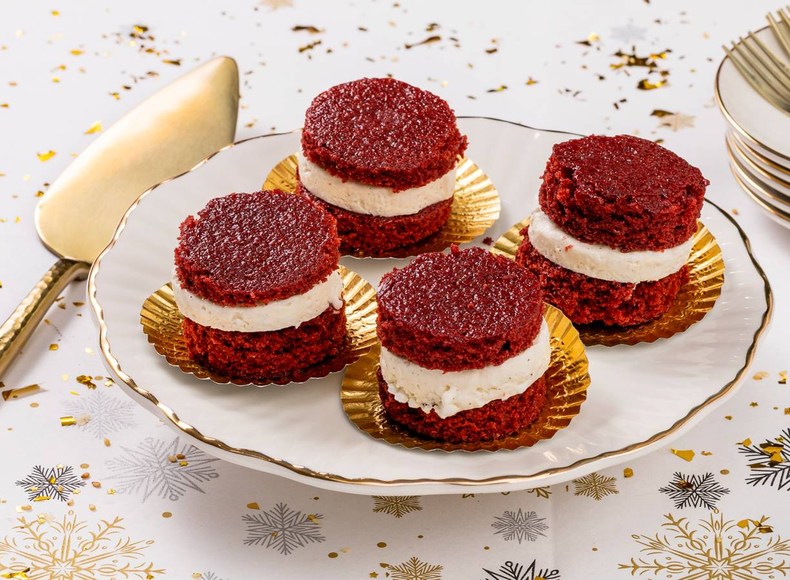

Rood is de kleur van kerst én van dit mini red velvet ijstaartje. Als dat je niet overtuigt, weten wij het ook niet meer.
Ingrediënten
50 gram kokosolie
100 gram zelfrijzend bakmeel
½ tl baksoda
100 gram kristalsuiker
1 el cacaopoeder
1 mespunt zout
100 ml amandeldrink ongezoet
1 tl vanille-extract
1 tl appel zijn
1 tl rode kleurstof
150 gram vegan vanille-ijs
50 gram violife creamy original
Bereidingswijze
Verwarm de oven voor op 175 °C. Smelt de kokosolie in een kleine pan op laag vuur.
Meng in een grote kom het bakmeel, de baksoda, suiker, cacao en het zout.
Roer met een garde de amandeldrink, kokosolie, het vanille-extract, de azijn en de rode kleurstof uit de tube erdoor.
Bekleed de bakplaat met het bakpapier en strijk het beslag er gelijkmatig over uit.
Bak in het midden van de oven in ca. 12 min. gaar. Prik de satéprikker in het midden van de cake.
Komt deze er schoon en droog uit, dan is-ie gaar. Laat de cake minimaal 1 uur afkoelen op de bakplaat.
Laat ondertussen het ijs zacht worden in een kom. Klop los. Klop het plantaardig alternatief voor roomkaas los met een garde.
Roer de roomkaas en het ijs door elkaar en bewaar tot gebruik in de vriezer.
Steek met de uitsteekvorm 16 cirkels (per 8 stuks) uit de cake. Leg 1 cirkel op een stuk vershoudfolie.
Schep 1 el van het roomkaas-ijsmengsel erop en dek af met nog een cakecirkel.
Pak het ijstaartje stevig in in de folie en bewaar tot gebruik in de vriezer. Maak zo nog 7 ijstaartjes (per 8 personen).
Laat ze minimaal 30 min. in de vriezer opstijven.

TipDe ijstaartjes kun je 5 dagen van tevoren maken. Bewaar ze goed ingepakt in vershoudfolie in de vriezer.